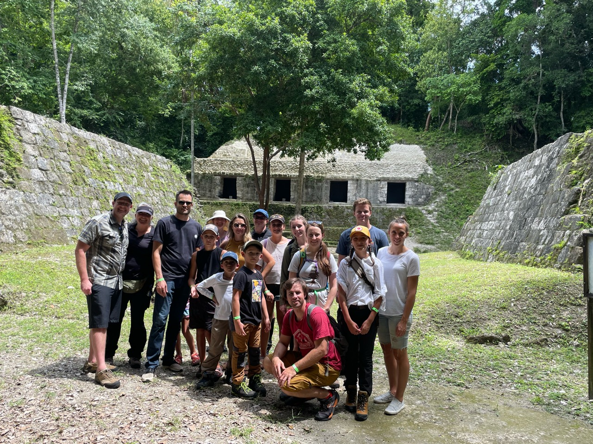
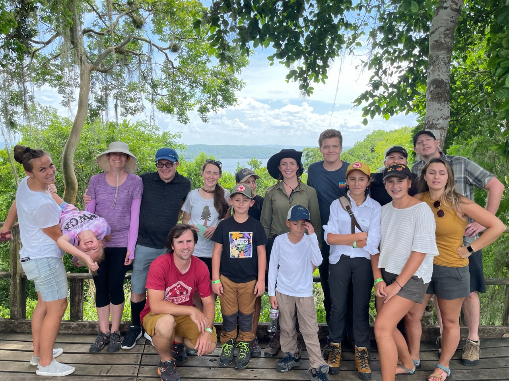
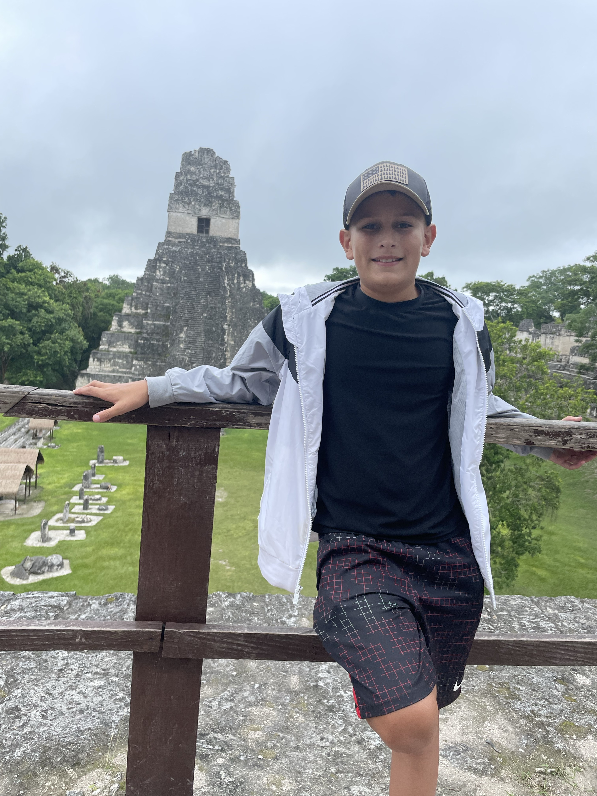
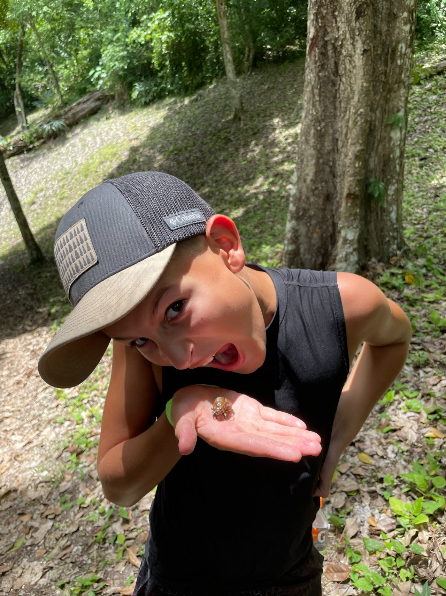
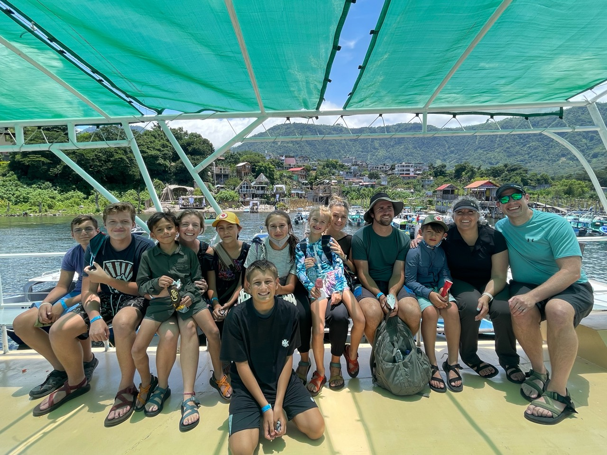
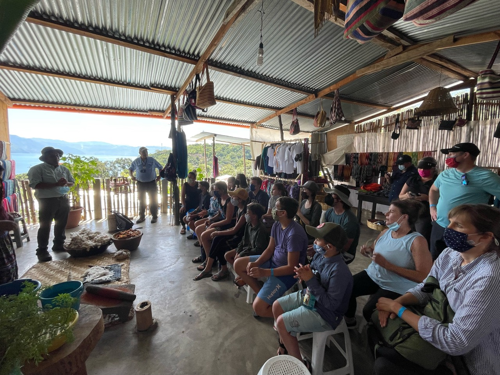

Bountiful Micro School
Guatemala
Our first Bountiful Micro School trip took us to Guatemala for four weeks. Our small group of students and two teachers spent a month exploring and learning together.





